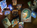

{kind=link}
{kind=link}
{kind=link}


One of the things I've been doing since I was a little child, is drawing. I'm not very good at, but people keep telling me I am. Since they keep saying I'm good, I'm going to keep on drawing. It makes perfect sense, eh?
Over the years I have discovered that computers were a really cool medium for creating art. Way back in the early eighties, I was drawing pictures on my Apple ][+, using a program I wrote. I think it's very impressive that a 10 year old can draw a picture of a TARDIS (see Doctor Who in your local video store) using homemade software.
About the time I discovered the Internet, I discovered that there was raytracing and other photorealistic methods for creating pictures with the computer. Naturally I wanted to get into this too. Unfortunately, I didn't get a ray tracer till 1992, when I found POV-Ray on the net. I already had Linux on my computer and boy did I like it.
Alas, POV-Ray isn't the easiest way to create three-dimensional images. Eventually, I discovered that the UofI has an art lab with 3D Studio by Autodesk. This software is very slick, but hard to use. One day, I hope I can afford the $2000 price tag.
Another form of art that I've been enjoying is digitalizing my hand drawn art and then coloring and modifying it using Adobe Photoshop 3.0, another piece of invaluable art software. This has had limited success, as I scanning in the art and cleaning it up is difficult at times, but it's usually fun, so I continue to do it.
Of late, my favorite computer based graphics programs have been: Adobe Photoshop, Fractal Design Painter, Paint Shop Pro, and Caligari TrueSpace. These pacakge are well designed and very powerful, though not necessarily easy to use.
Obviously, I only have a small part of my artwork on line, as I have limited space on networked machines. However, there are some examples and here they are:
My Urusei Yatsura Ray Traced Postcard Gallery (341k, 8bit WinBMP within a ZIP) (July 15th, 1995)

This won't be up for a while, but you can try it.
I also have a 24bit version that is 2.5megs. It looks better, but it's large. If you think I should upload it somewhere, then mail me and tell me so. I don't (currently) think there is any demand for it, but if I'm wrong, tell me! Just mail me using the docwhat@uiuc.edu link at the bottom of any of my homepages!
The ray trace of My Swimming Pool Logo (53k 8bit GIF) (July 16th, 1995)
Dial 9 to get OUT (2.25mb 24bit JPG) (October 3rd, 1995)
The history behind this is a little bizzare, but the idea is that I knew a guy
who had a telephone key pad on his jacket. I asked him why he had a telephone key
pad on his jacket. His reply, "Dial 9 to get out!"
Christian G. Höltje
<docwhat@uiuc.edu> The easiest way to mail me is to select my address above.[My Home Page | Table of Contents]